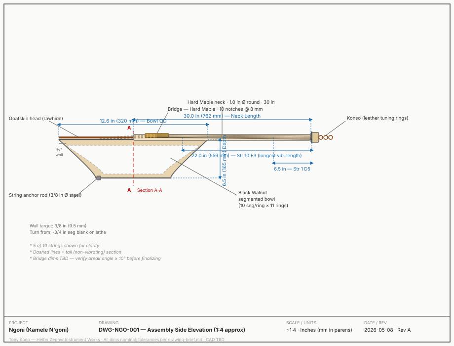
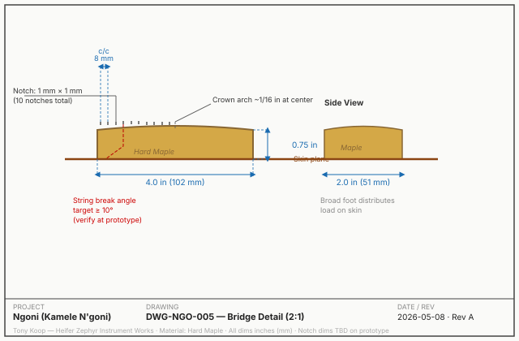

Cultural Context & Project Intent
The Instrument
The ngoni is a plucked-string bowl-lute of the Mande peoples of West Africa — Mali, Guinea, Senegal, Burkina Faso. It is one of the oldest continuously-played string instruments in the West African tradition.
The Donso ngoni (6-string) is tied to the donso hunting brotherhoods and carries ceremonial weight. The Kamele ngoni (10–12 strings) is a modernized form popularized in the 1950s–60s, now the standard performance instrument.
"Ngoni" is considered a likely etymological ancestor of the word banjo via the transatlantic diaspora.
This Project
This repository documents the ngoni as an engineering object — parametric string schedule, segmented bowl construction, and shop-ready build documentation — while acknowledging its living cultural tradition with full respect.
The instrument's origins are attributed to the Mande griot and donso traditions. This documentation does not claim cultural authority over the music or ceremonial forms.
References: Charry (2000), Mande Music; Coolen (1984), The Fodet. See resources.md for full bibliography.
Related Instruments
Kora — larger 21-string harp-lute cousin; same segmented bowl technique
Conga / Ashiko — share ring-stack-and-turn construction method
Banjo — descendant instrument; skin head over resonating bowl
Part of the Heifer Zephyr Instrument Works catalogue.
Design Inputs — Three Variants
| Parameter | Donso 6 | Kamele 10 ★ | Kamele 14 | Unit |
|---|---|---|---|---|
| String count | 6 | 10 | 14 | — |
| Bowl outer Ø | 10.0 | 12.6 | 17.7 | in |
| Bowl depth | 5.0 | 6.5 | 8.0 | in |
| Neck length | 24 | 30 | 36 | in |
| Longest string (vib.) | 18.0 | 22.0 | 28.0 | in |
| Shortest string (vib.) | 7.0 | 6.5 | 6.0 | in |
| Treble tension | 6 | 6 | 6 | lbf |
| Bass tension | 10 | 12 | 14 | lbf |
| Segments / ring | 10 | 10 | 12 | — |
| Bowl wood | Blk Walnut | Blk Walnut | Blk Walnut | — |
★ = Primary design case · All computed values from Mersenne–Taylor model · Neck deflection at full load: ~0.048 in (✓ < 0.050 in limit)
String Schedule — Kamele 10 (Mersenne–Taylor)
f = (1/2L) × √(T/μ) · Nylon density 0.04155 lb/in³ · Breaking stress 44,600 psi · g = 386.4 in/s²
| # | Note | Freq (Hz) | Vib Len (in) | Tension (lbf) | Gauge (in) | Gauge (mm) | % Breaking |
|---|---|---|---|---|---|---|---|
| 1 | D5 | 587.33 | 6.5 | 6 | 0.0349 | 0.887 | 14.1 ✓ |
| 2 | C5 | 523.25 | 7.5 | 6 | 0.0340 | 0.863 | 14.9 ✓ |
| 3 | A4 | 440.00 | 9.0 | 6 | 0.0337 | 0.855 | 15.1 ✓ |
| 4 | G4 | 392.00 | 10.5 | 8 | 0.0374 | 0.950 | 16.3 ✓ |
| 5 | F4 | 349.23 | 12.0 | 8 | 0.0367 | 0.933 | 16.9 ✓ |
| 6 | D4 | 293.66 | 14.0 | 10 | 0.0418 | 1.063 | 16.3 ✓ |
| 7 | C4 | 261.63 | 16.0 | 10 | 0.0411 | 1.044 | 16.9 ✓ |
| 8 | A3 | 220.00 | 18.5 | 12 | 0.0463 | 1.176 | 16.0 ✓ |
| 9 | G3 | 196.00 | 20.5 | 12 | 0.0469 | 1.191 | 15.6 ✓ |
| 10 | F3 | 174.61 | 22.0 | 12 | 0.0491 | 1.246 | 14.2 ✓ |
All %breaking values 14–17% — well within safe range for plain nylon. Gauge range 0.855–1.246 mm maps to standard monofilament sizes. Tensions confirmed under 50% breaking for all Donso 6 and Kamele 10 strings.
Manufacturing Drawings
DWG-NGO-001 — Assembly Side Elevation (~1:4)

DWG-NGO-005 — Bridge Detail (2:1 enlarged)

Drawings DWG-NGO-002 through 006 pending CAD. See drawing-brief.md for full drawing specifications.
Bill of Materials — Kamele 10
| Item | Qty | Material / Spec | Notes |
|---|---|---|---|
| Bowl segments | 110 pcs (+ 10% extra) | 4/4 Black Walnut | Straight grain; ~3 bd ft |
| Bowl base plug | 1 ea | Black Walnut | Closes bottom; lathe-turned |
| Neck blank | 1 ea | Hard Maple 30×1.5×1.5 in | Straight grain preferred |
| Goatskin head | 1 ea | Rawhide goatskin, 16 in+ Ø | Soak 12–24 h; rawhide not chrome-tanned |
| Bridge blank | 1 ea | Hard Maple 4×2×0.75 in | 10 notches @ 8 mm spacing |
| Nylon strings | 10 ea | Monofilament 0.85–1.25 mm | 4 gauges; all plain nylon |
| Konso tuning rings | 10 ea | Braided leather cord | Traditional friction tuning |
| String anchor rod | 1 ea | Steel 3/8 in Ø × ~13.5 in | At bowl base |
| Upholstery tacks | 16 ea | Steel tacks | Skin securing |
| Titebond III + Tung oil | 1 each | — | Standard finishing kit |
Estimated material cost: $91–$214 · See sourcing.csv for full supplier list and prices.
Build Workflow
- Set miter sled to 18° (test ring on scrap first)
- Cut 121 segments (11 rings × 11 pcs, 10% extra)
- Glue rings one at a time with band clamp; cure 1 h each
- Stack 11 rings; pipe-clamp; cure 4 h
- Lathe: true exterior, hollow interior to 3/8 in wall; drill 1.25 in neck-entry hole
- Joint and plane neck blank; shape round/D-profile (spokeshave)
- Sneak-fit neck into bowl hole — add glue when fit is confirmed
- Carve/CNC bridge: crown arch, 10 notches @ 8 mm spacing
- Test bridge stability before skin — break angle must be ≥ 10°
- Soak goatskin 12–24 h in room-temperature water
- Stretch over bowl rim; tack with 16 tacks in star pattern
- Dry 24–48 h at room temperature — no heat
- Install string anchor rod through bowl base
- String up — middle strings first; bring all to approximate tension
- Attach konso tuning rings at headstock; tune to D–F–G–A–C
- Allow 48 h string/skin settle; retune daily for 1 week
- Sand bowl and neck to 400 grit; apply 2–3 coats tung oil (avoid skin)
Risk Register — Top Issues
| ID | Category | Risk | Mitigation | Priority |
|---|---|---|---|---|
| B-05 | Structural | Bridge tips under tension if break angle < 10° | Test with mockup before skin mounting | HIGH |
| A-02 | Acoustic | Kamele 14 top strings (0.45–0.55 mm) fragile at 48–54% breaking | Raise tension to 7–8 lbf on str 1–5; buy extra stock | Medium |
| B-01 | Structural | Bowl ring joints fail in humidity cycle | Titebond III; kiln-dry stock (<8% MC); full cure before load | Medium-High |
| A-01 | Acoustic | String pitch drift > ±10 cents in first 48 h | Allow 48–72 h settle; retune daily for 1 week | Expected |
| D-01 | Supply | Goatskin unavailable in 16 in+ diameter | Order from Sioux Trading Post early (3-wk lead); order 2 skins | Plan ahead |
Full risk register: risks.md (5 categories, 16 risks)
Repository Files
design.md — Parametric design doc, string schedules, neck loadsbom.csv — Full bill of materials (3 variants)sourcing.csv — Suppliers, prices, lead timescut-list.csv — Miter cut dimensions per ringvalidation.csv — 20 tuning and structural checksassembly-manual.md — 19-step shop build guide with checkboxessupplier-rfq.md — RFQ templates (5 materials)risks.md — Risk register (5 categories)resources.md — Cultural provenance + bibliographyjig-decision.md — Fixture decisions for each build stepdrawing-brief.md — Drawing spec (DWG-NGO-001 to 006)drawings/ — SVG drawings (assembly + bridge detail)cad/cad-notes.md — SolidWorks strategy + OpenSCAD startercnc/setup-sheet.md — CNC setup: bridge notch + neck rough passwolfram/ngoni-model.wl — String schedule, Helmholtz, ManipulateNgoni-Capstone.pptx — 14-slide capstone deck